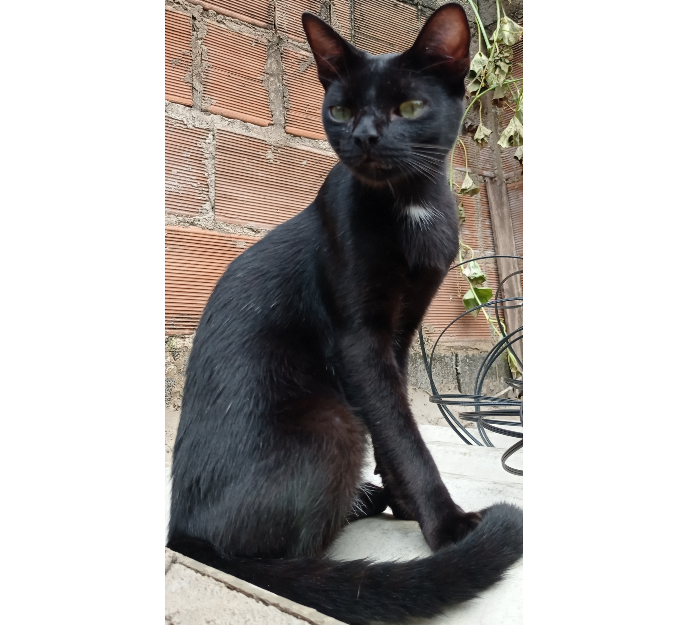
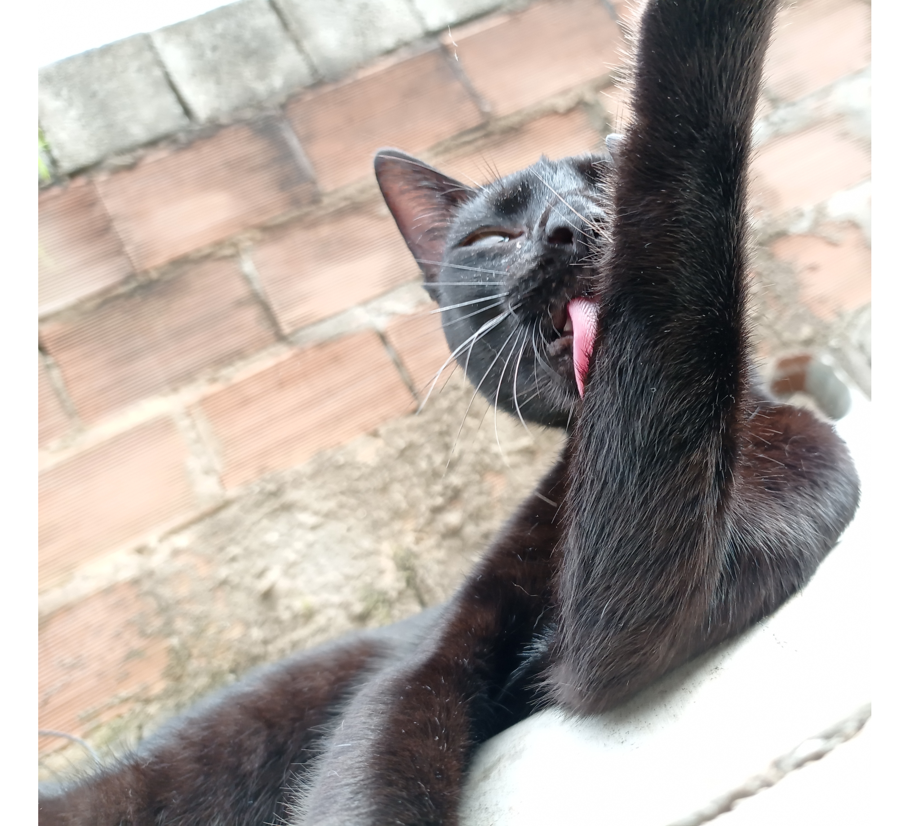
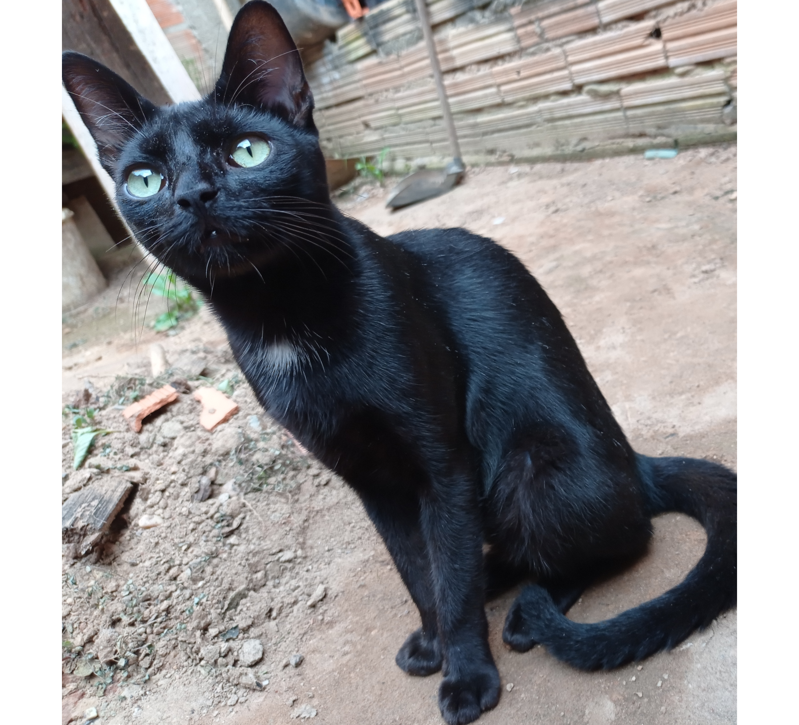

Yuki
Yuki, ele chegou aqui em casa sozinho, não faço a mínima ideia de onde ele veio. Acordei um dia e mãe estava lá conversando com aquela criaturinha magrela, cabeçuda e zoiuda kk. Já tinha deixado claro que ele só iria ficar lá até achar um dono, mas né... Acabou que ele ficou. Ele interage pouco com os irmãos, exceto Nero. Yuki e mais na dele a maior parte do tempo, não sai muito de casa, e ele é bem apegado a minha mãe.
Uma história legal sobre ele e que quando ele chegou aqui, logo quando chegou mesmo, coisa de 2/3 dias, veio umas criança aqui na porta e viu ele, e falou que parecia com o gatinho que estava na casa delas kk já logo mandei a braba, falei: 'Não pô, esse aqui é filho desse gato aqui (e apontei pra Salem kk)' Salem logo da mesma cor que Yuki, elas acreditou. Nunca mais falou nada, mas também eu sabia que não era delas. Elas sempre pegavam bichos e os levavam pra casa brincava e depois soltava (inclusive suika, ela também teve um envolvimento com essas crianças).
Uma história legal sobre ele e que quando ele chegou aqui, logo quando chegou mesmo, coisa de 2/3 dias, veio umas criança aqui na porta e viu ele, e falou que parecia com o gatinho que estava na casa delas kk já logo mandei a braba, falei: 'Não pô, esse aqui é filho desse gato aqui (e apontei pra Salem kk)' Salem logo da mesma cor que Yuki, elas acreditou. Nunca mais falou nada, mas também eu sabia que não era delas. Elas sempre pegavam bichos e os levavam pra casa brincava e depois soltava (inclusive suika, ela também teve um envolvimento com essas crianças).

O nome 'Yuki' é de uma dubladora japonesa do anime Bleach. Primeiramente eu ia colocar o nome dele de uma personagem lá de bleach, era uma gata muitooo parecida com Yuki, só não tinha a pinta branca no peito, o nome era 'Yoruichi', mas esse nome é muito difícil né. Então eu pesquisando mais a fundo descobri que a mulher que dava voz a 'Yoruichi' se chamava 'Yuki Inoue', gostei desse nome, foi e ficou 'Yuki'. Outra coisa, na época eu nem percebi, mas um outro anime, que eu também assisti tem um personagem que se chama 'Yuki' kk, mas esse não tem nada ver com o meu Yuki, só o nome mesmo.
Características: Yuki tem uma pelagem totalmente preta, com apenas uma tochinha branca no peitoral. Ele é bem calmo, ele não se dá muito bem com os outros irmãos, apenas com Nero, acho que por causa de Nero ter praticamente a mesma idade dele, eles se dão muito bem (às vezes não). E meio que o fato de Nero estar aqui hoje é por causa dele, mas isso eu conto na página de Nero. Claramente dá para perceber que Yuki se parece muito com aqueles gatos que sempre estão em coisas relacionadas ao Egito, um gato que passa uma aura de que é superior a tudo kk.
Obs: O nome no topo da página está caracterizado de acordo com as características físicas dele.
Características: Yuki tem uma pelagem totalmente preta, com apenas uma tochinha branca no peitoral. Ele é bem calmo, ele não se dá muito bem com os outros irmãos, apenas com Nero, acho que por causa de Nero ter praticamente a mesma idade dele, eles se dão muito bem (às vezes não). E meio que o fato de Nero estar aqui hoje é por causa dele, mas isso eu conto na página de Nero. Claramente dá para perceber que Yuki se parece muito com aqueles gatos que sempre estão em coisas relacionadas ao Egito, um gato que passa uma aura de que é superior a tudo kk.
Obs: O nome no topo da página está caracterizado de acordo com as características físicas dele.


